Green = comes out of general rules (gait from body size, footholds from terrain, reactions chosen by predicting geometry). Yellow = goals for pelvis, hands and feet solved by IK. Purple = hand-built kinematic model. Blue = trained or evolved on a physical body.
People: walking, running, terrain, obstacles (one planner, gait from the Froude number)
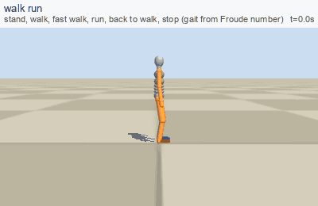
walk_runemergent stand, walk, fast walk, run, back to walk, stop
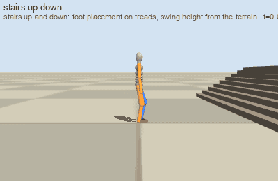
stairs_up_downemergent stairs are just terrain (the steps span the whole width: the only way is over)
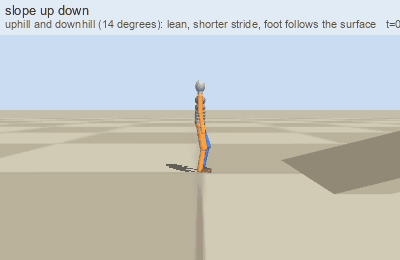
slope_up_downemergent slopes: trunk pitch and foot rotation follow the ground
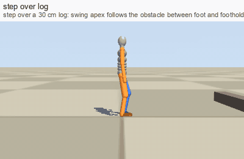
step_over_logemergent step over a log
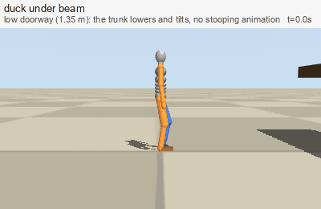
duck_under_beamemergent auto-duck below a ceiling
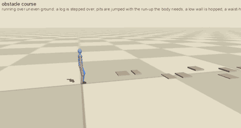
obstacle_courseemergent uneven ground, a log, pits (jumped with the run-up the body needs), a low wall, a waist-high wall (vaulted), a wall that is too high (gone round), a pit that is too wide (stops, afraid)
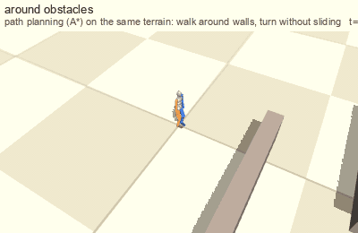
around_obstaclesemergent A* around walls
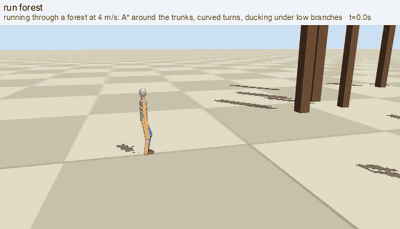
run_forestemergent run through a forest, duck under branches
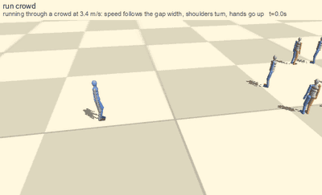
run_crowdemergent run through a crowd
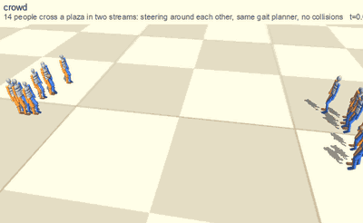
crowdemergent 14 people cross a plaza
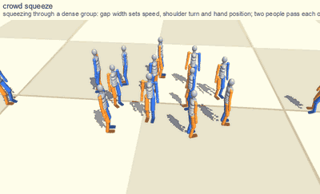
crowd_squeezeemergent squeeze through people: shoulders turn, hands go up
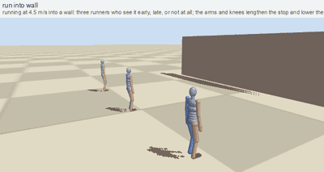
run_into_wallemergent run into a wall: seen early, late, not at all
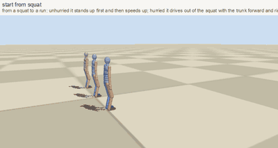
start_from_squatemergent from a squat to a run: stand first, drive out, or a sprinter's start
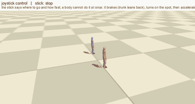
joystick_controlemergent stick input with inertia: brake, pivot, corner, accelerate
pregnant_stairsemergent stairs in a skirt: not pregnant vs heavily pregnant
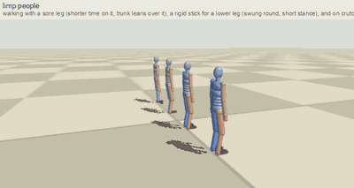
limp_peopleemergent sore leg, rigid stick for a lower leg, crutches
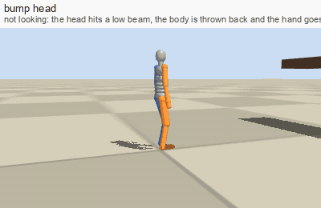
bump_heademergent hit the head on a beam
Jumping: how far the body knows it can jump (self-model learned by practice, fear)
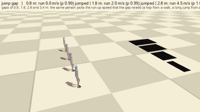
jump_gapemergent gaps of 0.8, 1.8, 2.8 and 3.4 m: the run-up follows the gap
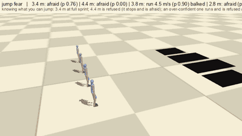
jump_fearemergent knowing the limit: jumps 3.4 m, is afraid of 4.4 m, an over-confident one balks at the edge, an over-cautious one will not try
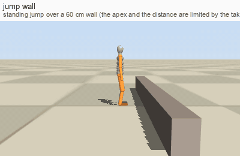
jump_wallemergent standing jump over a wall
Climbing and hanging
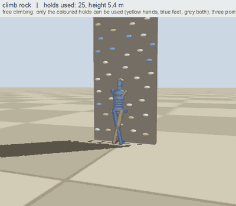
climb_rockemergent rock face: only the coloured holds can be used
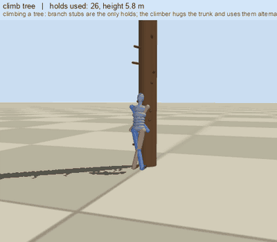
climb_treeemergent tree: branch stubs are the only holds
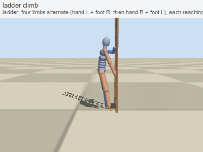
ladder_climbgoal script ladder
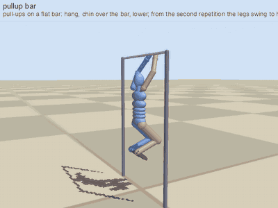
pullup_bargoal script pull-ups on a bar, legs help
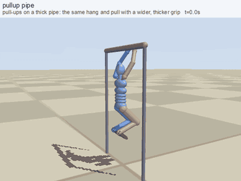
pullup_pipegoal script pull-ups on a pipe
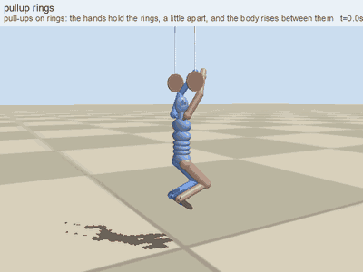
pullup_ringsgoal script pull-ups on rings
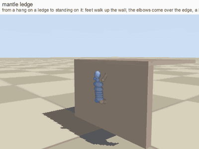
mantle_ledgegoal script from a hang to standing on a ledge
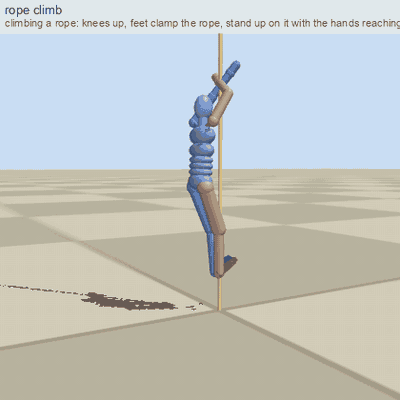
rope_climbgoal script climbing a rope with hands and feet
Everyday situations
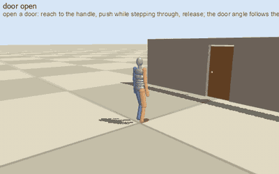
door_opengoal script open a door
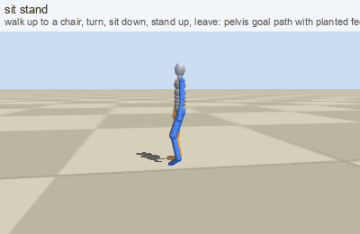
sit_standgoal script sit on a chair and stand
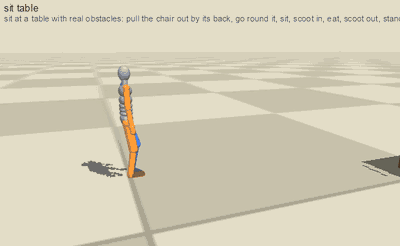
sit_tablegoal script pull the chair out, sit, scoot in, eat, leave (table and chair are real obstacles)
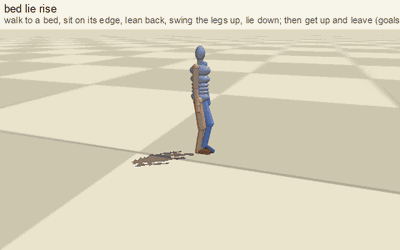
bed_lie_risegoal script lie in a bed, get up
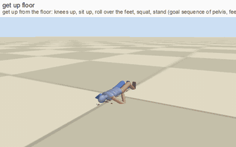
get_up_floorgoal script get up from the floor
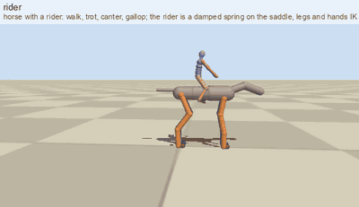
ridergoal script ride a horse (see the horse section)
Blows, pain, reactions
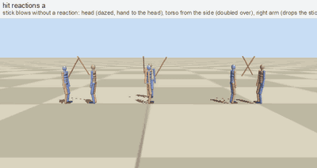
hit_reactions_aemergent hit on head, torso, arm: stagger, doubled over, drop the weapon, clutch
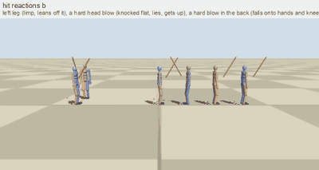
hit_reactions_bphysics, evolved leg: limp; hard head blow: physical fall, lie, get up
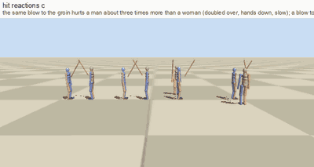
hit_reactions_cphysics, evolved groin (man vs woman) and knee
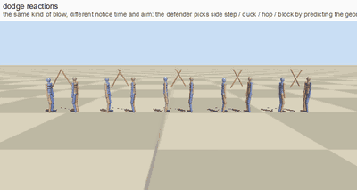
dodge_reactionsemergent notice in time: side step, duck, hop, block; too late: hit
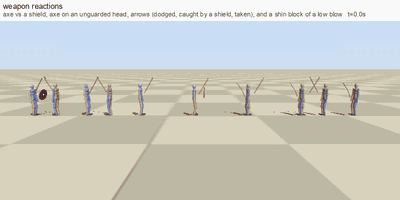
weapon_reactionsemergent axe vs shield, axe on a bare head, arrows dodged, caught by a shield, taken; shin block
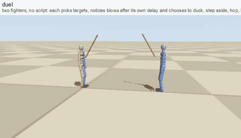
duelemergent two fighters choose targets and reactions on their own
Blows with different weapons and limbs; damage from animals
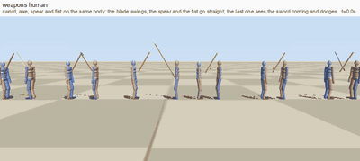
weapons_humanemergent sword, axe, spear and fist: swing or straight thrust, hit or dodged
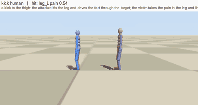
kick_humanemergent a kick to the thigh: the victim limps
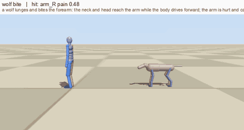
wolf_biteemergent a wolf lunges and bites the forearm: the arm is hurt
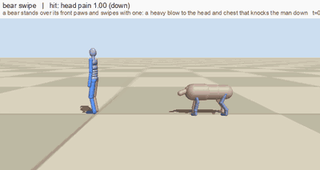
bear_swipeemergent a bear's paw swipe to the head: a knock-down
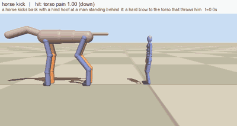
horse_kickemergent a hind hoof kick: a hard blow to the torso
Cat
cat_jump_upemergent jump up and down: eight spine joints coil and stretchslalom_catemergent slalom: tight turns, balance tail
Dog
slalom_dogemergent slalom at a runlimp_dogsemergent sore leg, three legs, a stick for a lower leganimal_agesemergent old dog, puppy, kid goat
Horse (and rider)
horse_gaitsemergent walk, trot, canter, gallopslalom_horseemergent slalom: the big body swings widehorse_jumpsemergent fences of 1.0, 1.6 and 2.7 m: jumps, jumps, refuseshorse_loademergent with 0, 90, 180 kg on the backhorse_gait_tailemergent 5-joint neck nod, hair tailridergoal script rider on the saddle: walk to galloprider_coursegoal script horse and rider: slalom and a fence
Other animals, side by side
animals_trotemergent dog, cat, horse, wolf, pig trotquadruped_speedsemergent walk to gallop by Froude numberquad_species_tailsemergent balance tail, wag, low tail, curlquad_jump_speciesemergent same relative obstacle: cat, dog, wolf, piganimals_stairs_logemergent stairs and a log, four legs
Birds and snake
birds_walkemergent bird gaitsbird_flightkinematic model flapping flight modelbird_land_groundkinematic model landing on the groundbird_land_branchkinematic model landing on a branchbird_land_waterkinematic model landing on waterbird_flyphysics, evolved physical flight: wings and tail are plates in the air; gliding about 3 s (the stroke is not good yet)bird_landphysics, evolved physical landing: not solved (hits hard)bird_takeoffphysics, evolved physical take-off: not learnedsnake_aroundkinematic model serpentine motion between walls
Water
swim_freestylekinematic model swimming with the head above water (hand-built)dive_swimkinematic model diving (hand-built)swim_surfacephysics, evolved physical swimmer at the surface with an oxygen budget: a poor stroke, but it does breatheswim_under_bottomphysics, evolved physical swimmer to a goal on the bottomswim_under_farphysics, evolved physical swimmer to a far goal at depth
Physical falls (MuJoCo, evolved on the bone-injury score)
shove_forwardphysics, evolved shove: stiff body vs evolved reflexdrop_2mphysics, evolved drop of 2 mdrop_2p5m_fwdphysics, evolved drop of 2.5 m with forward speedpreg_shove_forwardphysics, evolved pregnant: the general reflex vs the reflex evolved for this body (the belly is scored most)preg_drop_1mphysics, evolved pregnant: a dropslide_slopephysics, evolved standing on a slippery slope
Numbers for the physical controllers
controller (240 held-out shoves and drops)
injury cost
head risk
torso
arms
legs
statue (stiff, no reflex)
3.72
0.46
0.67
0.44
0.71
hand-made starting pose
3.81
0.55
0.48
0.73
0.53
evolved on bone-injury score
1.61
0.02
0.01
0.61
0.78
The same falls for a heavily pregnant body (120 held-out shoves and drops, the belly weighs most in the score)
controller
injury cost
belly
head
torso
arms
legs
stiff body
9.49
0.61
0.48
0.48
0.40
0.57
general reflex
7.11
0.55
0.02
0.00
0.50
0.81
reflex evolved for this body
2.68
0.07
0.08
0.19
0.58
0.69
Standing on a slippery slope (40 held-out slopes 8-25 degrees, friction 0.12-0.4)
controller
stays up 5 s
mean time up
mean slide
stiff body, no controller
0%
1.1 s
0.44 m
evolved controller
20%
1.8 s
0.25 m
A partial result: the evolved controller helps but most slopes still end in a fall.